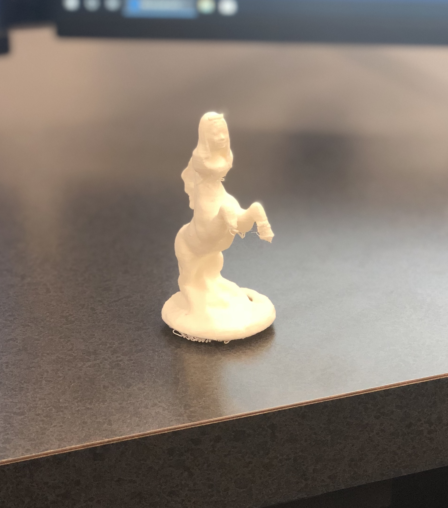
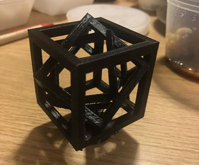
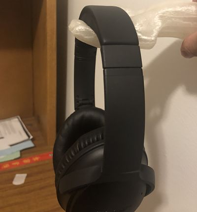
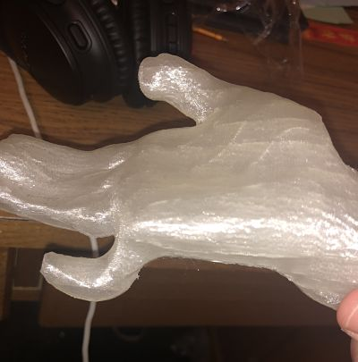
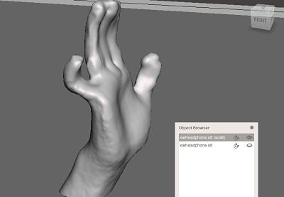

Meshmixer
My first project is to scan my head and combine it with a pedastal base. I downloaded a unicorn stl file from Thingiverse and cut the head part of the model. I combined my head with the unicorn body. Additionally, I combined a crown on my head. One of the challenges was to scan accurately. A major part of my chin was missing from the scanned file because the scan camera did not scan me from below. However, I fixed the issue with the "make solid" tool from mesh mixer. Adjusting the positions also takes a long time. Moreover, it took 20 minutes to export the file as stl. Once the file was exported as a stl, I put it into Makerbot and adjusted its dimensions so that it's under 4inches. The overall final product looks nice, but the crown is too small to be printed accurately. I scratch the crown off because it only looks like a doughnut shape instead of an actual crown.
 Click to download the unicorn stl file
Click to download the unicorn stl file
Non subtractive object
Our second task is to design and print an object that could no be made substractively. In order for an object to be non-substractive, it has to include an inner structure. In Autodesk, I extruded a cube and cut it so that only its outlines remain. I copied and cube outline, scaled it at 85% and turned the new one so that its edge was 45 degrees to the previous one. I repeated this process for another inner layer. In the end, I attached a thin cylindrical base. I exported the file as stl and put it in makerBot. I added supported, exported the file as .makerbot and printed it! This turned out to be really well. I liked the design and enjoyed the process. Please see the image and download the original file below.
 Click to download the non substractive stl fileUseful object with additive manufacturing
Our third task is to print something useful. I have a headphone and several earphones, taking quite some space, lying on my messy desk. I wanted to print a headphone hanger. My inspiratin comes from how I hold these headphone and earphones on my hand when I wipe my table. I used the 3D scanning camera to scan my hand. I put the file in meshmixer, filled in the holes, and smoothed several parts with different brushes. I added support with makerBot and printed it. I will glue this to the wall next to my desk. It should be a convenient addition to my dorm!
   Click to download the headphone hanger stl file